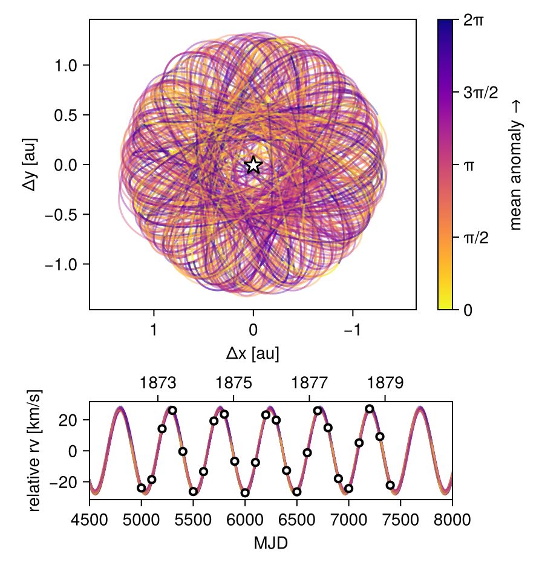

Fit Relative RV Data
Octofitter includes support for fitting relative radial velocity data. Currently this is only tested with a single companion. Please open an issue if you would like to fit multiple companions simultaneously.
The convention we adopt is that positive relative radial velocity is the velocity of the companion (exoplanets) minus the velocity of the host (star).
To fit relative RV data, start by creating a likelihood object:
using Octofitter
using OctofitterRadialVelocity
using CairoMakie
using Distributions
rel_rv_like = PlanetRelativeRVLikelihood(
(epoch=5000, rv=-24022.74287804528, σ_rv=1500.0),
(epoch=5100, rv=-18571.333891168735, σ_rv=1500.0),
(epoch=5200, rv= 14221.562142944855, σ_rv=1500.0),
(epoch=5300, rv= 26076.885281031347, σ_rv=1500.0),
(epoch=5400, rv= -459.2622916989299, σ_rv=1500.0),
(epoch=5500, rv=-26319.264894263993, σ_rv=1500.0),
(epoch=5600, rv=-13430.95547916007, σ_rv=1500.0),
(epoch=5700, rv= 19230.962951723584, σ_rv=1500.0),
(epoch=5800, rv= 23580.261108170227, σ_rv=1500.0),
(epoch=5900, rv= -6786.277919597756, σ_rv=1500.0),
(epoch=6000, rv=-27161.777481651112, σ_rv=1500.0),
(epoch=6100, rv= -7548.583094927461, σ_rv=1500.0),
(epoch=6200, rv= 23177.948014103342, σ_rv=1500.0),
(epoch=6300, rv= 19780.94394128632, σ_rv=1500.0),
(epoch=6400, rv=-12738.38520102873, σ_rv=1500.0),
(epoch=6500, rv=-26503.73597982596, σ_rv=1500.0),
(epoch=6600, rv= -1249.188767321913, σ_rv=1500.0),
(epoch=6700, rv= 25844.465894406647, σ_rv=1500.0),
(epoch=6800, rv= 14888.827293969505, σ_rv=1500.0),
(epoch=6900, rv=-17986.75959839915, σ_rv=1500.0),
(epoch=7000, rv=-24381.49393255423, σ_rv=1500.0),
(epoch=7100, rv= 5119.21707156116, σ_rv=1500.0),
(epoch=7200, rv= 27083.2046462065, σ_rv=1500.0),
(epoch=7300, rv= 9174.176455190982, σ_rv=1500.0),
(epoch=7400, rv=-22241.45434114139, σ_rv=1500.0),
instrument_name="simulated data",
jitter=:gamma # name of jitter variable to use
)PlanetRelativeRVLikelihood Table with 3 columns and 25 rows:
epoch rv σ_rv
┌────────────────────────
1 │ 5000 -24022.7 1500.0
2 │ 5100 -18571.3 1500.0
3 │ 5200 14221.6 1500.0
4 │ 5300 26076.9 1500.0
5 │ 5400 -459.262 1500.0
6 │ 5500 -26319.3 1500.0
7 │ 5600 -13431.0 1500.0
8 │ 5700 19231.0 1500.0
9 │ 5800 23580.3 1500.0
10 │ 5900 -6786.28 1500.0
11 │ 6000 -27161.8 1500.0
12 │ 6100 -7548.58 1500.0
13 │ 6200 23177.9 1500.0
14 │ 6300 19780.9 1500.0
15 │ 6400 -12738.4 1500.0
16 │ 6500 -26503.7 1500.0
17 │ 6600 -1249.19 1500.0
⋮ │ ⋮ ⋮ ⋮See the standard radial velocity tutorial for examples on how this data can be loaded from a CSV file.
The relative RV likelihood does not incorporate an instrument-specific RV offset. A jitter parameter called can still be specified in the @planet block, as can parameters for a gaussian process model of stellar noise. Currently only a single instrument jitter parameter is supported. If you need to model relative radial velocities from multiple instruments with different jitters, please open an issue on GitHub.
Next, create a planet and system model, attaching the relative rv likelihood to the planet. Make sure to add a jitter parameter (optionally jitter=0) to the planet.
@planet b KepOrbit begin
a ~ Uniform(0,10)
e ~ Uniform(0.0, 0.5)
i ~ Sine()
ω ~ UniformCircular()
Ω ~ UniformCircular()
τ ~ UniformCircular(1.0)
P = √(b.a^3/system.M)
tp = b.τ*b.P*365.25 + 6000 # reference epoch for τ. Choose an MJD date near your data.
gamma ~ LogUniform(0.1, 1000) # m/s
end rel_rv_like
@system ExampleSystem begin
M ~ truncated(Normal(1.2, 0.1), lower=0.1)
end b
model = Octofitter.LogDensityModel(ExampleSystem)LogDensityModel for System ExampleSystem of dimension 11 and 28 epochs with fields .ℓπcallback and .∇ℓπcallback
using Random
rng = Random.Xoshiro(123)
chain = octofit(rng, model)Chains MCMC chain (1000×29×1 Array{Float64, 3}):
Iterations = 1:1:1000
Number of chains = 1
Samples per chain = 1000
Wall duration = 2.94 seconds
Compute duration = 2.94 seconds
parameters = M, b_a, b_e, b_i, b_ωy, b_ωx, b_Ωy, b_Ωx, b_τy, b_τx, b_gamma, b_ω, b_Ω, b_τ, b_P, b_tp
internals = n_steps, is_accept, acceptance_rate, hamiltonian_energy, hamiltonian_energy_error, max_hamiltonian_energy_error, tree_depth, numerical_error, step_size, nom_step_size, is_adapt, loglike, logpost, tree_depth, numerical_error
Summary Statistics
parameters mean std mcse ess_bulk ess_tail rhat ⋯
Symbol Float64 Float64 Float64 Float64 Float64 Float64 ⋯
M 1.1710 0.0938 0.0034 728.0051 858.9871 1.0045 ⋯
b_a 1.2671 0.0336 0.0012 733.1642 759.3627 1.0046 ⋯
b_e 0.0120 0.0096 0.0004 489.4792 331.1723 1.0016 ⋯
b_i 1.5361 0.3093 0.0280 144.8935 619.7917 1.0065 ⋯
b_ωy 0.0029 0.6983 0.0424 286.6284 477.8764 1.0045 ⋯
b_ωx 0.0161 0.7197 0.0492 198.7702 487.9275 1.0017 ⋯
b_Ωy 0.0042 0.7205 0.0356 434.9514 842.7230 0.9991 ⋯
b_Ωx 0.0159 0.7024 0.0377 370.8370 767.4709 0.9993 ⋯
b_τy -0.0021 0.7000 0.0418 309.0884 519.7657 1.0032 ⋯
b_τx -0.0133 0.7283 0.0481 223.6519 403.0972 1.0005 ⋯
b_gamma 54.5211 118.9206 4.9081 740.9236 679.8204 1.0007 ⋯
b_ω 0.0616 1.7991 0.1098 304.6242 569.1687 1.0025 ⋯
b_Ω 0.0560 1.8173 0.0857 518.5922 627.0829 0.9992 ⋯
b_τ -0.0059 0.2869 0.0157 404.4306 566.0499 1.0029 ⋯
b_P 1.3195 0.0021 0.0001 1221.8485 717.7149 1.0014 ⋯
b_tp 5997.1631 138.2979 7.5707 405.0345 592.4314 1.0029 ⋯
1 column omitted
Quantiles
parameters 2.5% 25.0% 50.0% 75.0% 97.5%
Symbol Float64 Float64 Float64 Float64 Float64
M 1.0151 1.0991 1.1677 1.2303 1.3714
b_a 1.2092 1.2417 1.2672 1.2887 1.3364
b_e 0.0003 0.0046 0.0100 0.0171 0.0348
b_i 1.1199 1.2477 1.4285 1.8536 2.0188
b_ωy -1.0647 -0.6503 -0.0261 0.6891 1.0422
b_ωx -1.0483 -0.7370 0.0968 0.6941 1.0562
b_Ωy -1.0658 -0.7142 0.0070 0.7132 1.0591
b_Ωx -1.0328 -0.6728 0.0290 0.6952 1.0604
b_τy -1.0582 -0.6926 0.0316 0.6818 1.0305
b_τx -1.0633 -0.7052 -0.0966 0.7363 1.0703
b_gamma 0.1201 0.8759 5.0096 42.0115 401.9782
b_ω -2.9219 -1.5589 0.1621 1.6380 2.9732
b_Ω -2.9797 -1.5259 0.0744 1.6039 3.0043
b_τ -0.4647 -0.2507 -0.0212 0.2385 0.4690
b_P 1.3155 1.3180 1.3195 1.3211 1.3235
b_tp 5776.0205 5879.2036 5989.7823 6114.9801 6225.9111
octoplot(model, chain, ts=range(4500, 8000, length=200), show_physical_orbit=true)